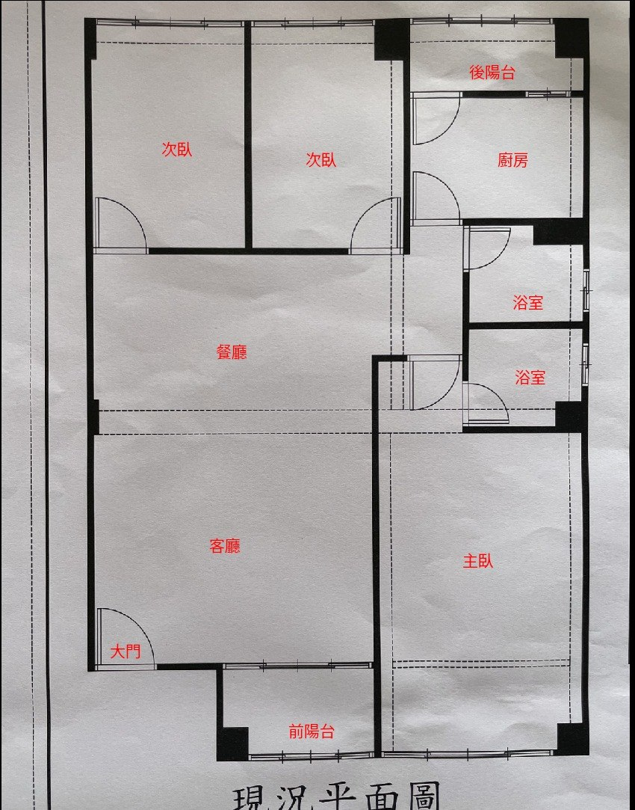

7 樓華廈 · 第 6 樓單層一戶 | 更新：2026-06-29
以「不打牆」為前提，把現有 3 房 2 廳雙衛的格局，對應到「夫妻 + 兩個寶寶（未來可能 + 岳父）」的人口結構，做機能定位與設計策略。重點在用櫃體、軟裝、燈光分區，而非動隔間 — 省錢、零結構風險、工期短。
現況格局本來就很好用 — 三房剛好對上「夫妻 + 兩寶」，又是雙衛浴（一套貼主臥、一套公共），早上不搶廁所。決定不打牆是聰明的：省下拆除/清運/泥作復原費、零結構風險、不必煩惱哪道是剪力牆。
裝潢重心因此轉到 3 件事：① 用櫃體與軟裝把每個區的個性做出來；② 保住 2.7m 淨高的爽度、只「化掉」那幾支樑；③ 房間分配預留人口成長彈性，但不為「5 年後可能」現在就硬花錢。
規劃的所有判斷都以這組數字為基準。
官方「現況平面圖」— 左側公共/採光帶，右側機能/服務帶。

| 分區 | 由上而下 | 特性 |
|---|---|---|
| 左側（採光帶） | 次臥 → 次臥 → 餐廳 → 客廳（大門）→ 前陽台 | 主要採光面、家庭公共活動軸 |
| 右側（服務帶） | 後陽台 → 廚房 → 浴室 → 浴室 → 主臥 | 用水、收納、私領域集中 |
依現場丈量尺寸繪製的示意圖，橘色虛線為大樑位置。比例接近但非施工圖 — 傢俱放樣、樑柱結構以建築師 / 結構技師現場確認為準。
2.7m 淨高其實比一般公寓（2.4～2.6m）寬敞，是這間房子的隱形優勢 — 不要為了藏樑把它砍掉。
客餐廳走極淺天花或裸天花，留住 2.7m 的開闊感；別整片包平。
樑兩側做間接燈帶或圓弧導角，把樑「化掉」而非「包掉」。樑是 RC 沒法埋嵌燈，要在樑旁配光。
選軌道燈 / 吸頂薄燈，避免吊燈再吃高度。
衣櫃 / 高櫃到頂可做 ≈ 2.6m 收納拉滿，但櫃體與上掀床要先對齊樑位，別卡一支樑在櫃子中間。
冷媒管 / 排水走樑下時先算好洩水坡度，出風口別被樑擋。
樑下 2.3m 拿來當走道、過門完全沒問題（門高才 2.0～2.1m），把矮的地方放在不影響體感的位置。
人口會變多，但牆不能動 → 房間分配就是成敗重點。原則：現在為「夫妻 + 兩寶」做滿，岳父的事「不預先花錢、但留一手」。
主臥放雙人床 + 嬰兒床（旁邊就有衛浴，半夜顧娃方便）。次臥①當大寶房，次臥②先當遊戲 / 彈性間。
兩間次臥分別給兩個小孩；或先共用一間（嬰兒床 + 大寶床），另一間留彈性。兩間次臥都放得下單人床。
那時孩子已大、可同房 → 兩寶併一間、空出一間給長輩。現在完全不用為此施工，到那天再評估即可。
尺寸取自手繪丈量稿，僅供配置參考（手繪比例不完全精確，實作以現場放樣為準）。
緊鄰一套衛浴 → 近乎主衛，半夜顧娃、起夜都方便。雙人床 + 衣櫃 + 嬰兒床配置綽綽有餘。
採光帶上的房間，給大寶當臥室 / 書房。到頂衣櫃避開樑位收納拉滿。
現在先當遊戲 + 彈性間，老二大了轉臥室。寬度足以排兩張床或上下舖（兩寶日後共用 → 空一間給岳父）。
採光最好的一帶，孩子放電空間。餐廳接廚房動線短。彈性區（沙發床 / 和室）預留可能性。
一套服務主臥、一套服務公共與小孩 → 早上尖峰不搶廁所，是這戶對你家結構的最大加分。
廚房接後陽台（曬衣 / 雜物 / 熱水器）。前陽台在客廳側，採光 / 綠化 / 收納皆可。
隔間被現有牆鎖死 → 用「非結構」手法分區，一樣能做出層次。
用矮櫃 / 半高櫃 / 開放層架界定客廳與餐廳，不砌牆也有分區感，還換來收納。
玄關落塵區、和室架高、廚房耐磨地 — 用地坪材質 / 高低差暗示空間轉換。
不同區用不同色溫 / 照度 / 燈具，晚上一開燈，空間個性自然出來。
一道重點牆刷色 / 貼材，比動隔間便宜太多就能定調房間氣質。
地毯、窗簾、屏風、層架，可隨人口階段重排，零施工換格局。
若要彈性開放，現有開口換玻璃拉門 / 折門，比打牆便宜又可逆。
先講真話 — 這個預算的合理打法，跟「滿屋系統櫃」是有張力的。
下表是「基礎工程」概估 — 這些是事後難補、會動到水電泥作天花的不可逆項目。
| 項目 | 概估 | 說明 |
|---|---|---|
| 保護 / 拆除 / 清運 | 2 萬 | 不打牆，僅局部 + 舊設備拆除 |
| 水電（插座 / 迴路 / 弱電 / 配管） | 13 萬 | 不可逆，要做好 — 見第 9 區電器盤點 |
| 泥作 + 雙衛防水磁磚 | 10 萬 | 兩套衛浴防水是漏水保命錢，別省 |
| 天花 / 輕鋼架 / 全室油漆 | 15 萬 | 含樑側間照層次（第 3 區） |
| 廚具（中階） | 10 萬 | 三機 + 檯面 + 下櫃 |
| 衛浴設備 ×2（面盆 / 馬桶 / 龍頭 / 暖風） | 9 萬 | 雙衛所以 ×2 |
| 地板（超耐磨木地板全室） | 10 萬 | 如沿用建商地板可省下 |
| 燈具 / 窗簾 | 6 萬 | 薄型燈具 + 全室窗簾 |
| 設計 / 監工費 | 9 萬 | 約工程款 8～12% |
| 基礎工程小計 | ≈ 84 萬 | 三個系統櫃版本「共同的底」 |
| → 剩給系統櫃 + 預備金 | ≈ 16 萬 | 這就是下一節的關鍵變數 |
你要的三版本。核心取捨：系統櫃做越多，基礎工程或總預算就得讓步。
| 版本 | 系統櫃預算 | 包含項目 | 取捨 / 總價影響 |
|---|---|---|---|
| 做少 | ≈ 15 萬 | 主臥衣櫃 + 兩間次臥衣櫃 + 玄關鞋櫃（純必要收納） | 剛好落在 100 萬內 ✓ 客餐廳用活動家具，留白多、未來彈性最大 |
| 做中 | ≈ 32 萬 | 做少版 + 媒體櫃 / 布幕牆（投影） + 餐邊 / 電器櫃 + 主臥化妝 / 書桌 + 一間小孩書桌櫃 | 需 加到 ~116 萬，或砍基礎（地板沿用舊的 / 廚衛降一階）回壓到 100 萬 |
| 做多 | ≈ 55 萬 | 全室到頂櫃 + 布幕牆 + 餐櫃 + 書牆 + 客廳臥榻 + 陽台收納 + 浴櫃 | 100 萬內幾乎不可能，需加到 ~135 萬，或大砍基礎（不建議犧牲水電 / 防水） |
只做「事後最麻煩才加」的衣櫃與鞋櫃。客廳電視櫃、書牆等先用活動家具或入住後分期追加。錢留給基礎工程品質 + 預備金（裝潢必有追加）。最符合「不為不確定超支」。
收納一次到位、生活機能完整，又不到「滿屋訂製」的浪費。推薦：核心（衣櫃 / 鞋櫃 / 媒體櫃布幕牆 / 餐櫃）一次做，書牆 / 臥榻留待入住後再決定 — 等於做少打底、做中收尾。
視覺最整、收納最大，但邊際效益遞減：臥榻 / 陽台櫃 / 書牆使用率因人而異。在 100 萬框架下要犧牲不可逆的基礎項，不划算。除非預算上修或極度重視收納再考慮。
你問的「要先確認電器才能決定插座」— 完全正確，這是裝潢最常被做反的順序。
已定 = 你們確認的；評估中 = 待決定；如採用 = 選配。填完交水電師傅照表配。
| 區域 | 電器 | 電壓 | 專迴 | 給排水 / 備註 |
|---|---|---|---|---|
| 廚房 | 冰箱 | 110V | 建議 | — |
| 瓦斯爐 已定 | — | 免 | 瓦斯管 + 電池點火，旁留 1 插座 | |
| 烤箱 / 蒸烤箱 如採用 | 220V | ✔ 必須 | — | |
| 洗碗機 如採用 | 110/220V | ✔ 建議 | ✔ 進排水 | |
| 微波 / 電鍋 / 快煮壺 / 咖啡機 | 110V | — | 檯面多留插座 | |
| 抽油煙機 / 廚下淨水（RO） | 110V | — | 淨水需排水 | |
| 客餐廳 | 客廳冷氣（室外機A，與主臥共用） | 220V | ✔ 室外機一迴 | 冷媒管避樑 |
| 投影機（天花） 已定 | 110V | 建議 | 🔴 避樑 + 訊號預埋空管 | |
| 電動投影布幕 | 110V | — | 布幕牆頂端出線 | |
| 媒體櫃訊源（擴大機 / 串流盒） | 110V | — | 含網路孔 + 對投影機穿線 | |
| 網路 router / 弱電箱 | 110V | — | 位置要先定 | |
| 掃地機器人基座 | 110V | — | 自動補水款需給排水 | |
| 空氣清淨機 / 除濕機 | 110V | — | — | |
| 臥室 ×3 | 主臥冷氣（室外機A）/ 次臥×2 冷氣（室外機B） | 220V | ✔ 每台室外機一迴（共 2 迴） | 冷媒管避樑 |
| 床頭插座 ×2（含 USB） | 110V | — | — | |
| 除濕機 / 嬰兒夜燈 / 監視器 / 暖奶器 | 110V | — | — | |
| 衛浴 ×2 | 三合一暖風機 ×2 已定 | 110/220V | ✔ 各自專迴 | 不可與免治 / 吹風機共迴 |
| 免治馬桶 / 吹風機（防水插座） | 110V | — | 免治需進水 | |
| 工作 / 後陽台 | 洗脫烘（或洗衣機）評估中 | 110/220V | ✔ 先預留一迴 | ✔ 進排水 + 排風 / 濕氣 |
| 熱水器（瓦斯 / 電） | —/220V | 電熱式 ✔ | 給水 |
| 檢核項目 | 為什麼重要 |
|---|---|
| 計價基準是室內坪還是權狀坪？ | 差 4.4 坪，用大的報價直接膨脹總價。 |
| 哪幾道是剪力牆 / 結構牆？ | 就算不打牆也要知道 — 釘櫃、開孔、走管都受限。請設計師標在圖上。 |
| 樑位有沒有疊到平面配置圖上？ | 高櫃 / 上掀床 / 冷氣出風口都要避樑，沒標清楚會現場踢鐵板。 |
| 系統櫃 vs 木作的比例與報價？ | 同收納量價差很大，要分項看，不要包成一筆。 |
| 5 年總持有成本（含家電耗材 / 保固） | 裝潢只是入門票，後續維護才是長期支出 — 一貫要看 5 年。 |
預算（100 萬）與系統櫃版本方向已定。剩下幾項補齊，就能進到設計師畫施工圖階段。